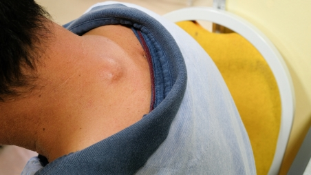

အရည္အိတ္အလုံးနွင္႔အဖုမ်ား

ခႏၶာကိုယ္မွာ ျဖစ္ေပၚႏိုင္တဲ့ အလံုးအဖုေတြအေၾကာင္း စိတ္၀င္စားပါသလား။ အေရျပားမွာ ေပါက္တတ္တဲ့ တခ်ဳိ႕ အဖုအလံုးေတြက ထူးျခားၿပီး လကၡဏာေတြကလည္း တစ္ခုနဲ႔ တစ္ခု မတူၾကပါဘူး။ ဒီေတာ့ ဘာေတြက ဘယ္လိုရွိလဲ သိခ်င္ေနမွာပါပဲ။
အရည္အိတ္ အလုံး၊ အဖုမ်ားႏွင့္ သင့္အေရျပား က်န္းမာေရး
သင့္ အေရျပား မ်က္ႏွာျပင္တြင္ ျဖစ္ေစ အေရျပားေအာက္တြင္ ျဖစ္ေစ အရည္အိတ္ အလုံး၊ အဖုမ်ား မ်ိဳးစုံ ျဖစ္ပြားႏိုင္ပါသည္။ အျဖစ္မ်ားေသာ အလုံး၊ အဖုမ်ားမွာ
၁။ Skin Cysts (အေရျပား အရည္အိတ္မ်ား)
၂။ Cherry Angioma (ခ်ယ္ရီသီးကဲ့သို႕ေသာ ေသြးေၾကာထုံးမ်ား)
၃။ Dermatofibromas (အေရျပား ဖိုင္ဘာမ်ွင္လုံးမ်ား)
၄။ Epidermoid cysts (အေရျပား အေပၚလႊာ အလုံးမ်ား)
၅။ Folliculitis (ေမြးကၽြတ္နာလုံးမ်ား)
၆။ Keratinacanthoma
၇။ Lipomas (အဆီက်ိတ္မ်ား) ျဖစ္ပါသည္။
၁။ Skin Cysts (အေရျပား အရည္အိတ္မ်ား)
ကင္ဆာမဟုတ္ေသာ ထို အရည္အိတ္မ်ားသည္ အရည္ၾကည္ သို႕မဟုတ္ ျပည္ကဲ့သို႕ေသာ အရည္မ်ားျဖင့္ ျပည့္ေနေသာ အေရျပားေအာက္ရိွ အလုံးပိတ္ အိတ္မ်ား ျဖစ္သည္။ ထိုအရည္အိတ္ မ်ားသည္ အေရျပား၏ မည္သည့္ေနရာတြင္ မဆို ျဖစ္ႏိုင္သည္။ စမ္းၾကည့္ေသာအခါ ပဲေစ့ေလးမ်ား အေရျပားေအာက္တြင္ စမ္းရသကဲ့သို႕ ျဖစ္သည္။ ပိုးဝင္ျခင္း အဆီဂလန္းမ်ား ပိတ္ျခင္းမ်ားေၾကာင့္ ျဖစ္ပြားႏိုင္သည္။
လကၡဏာမ်ား
မ်ားေသာအားျဖင့္ ထိုအရည္အိတ္မ်ားသည္-
ၾကီးထြားမႈ ေႏွးျခင္း
နာက်င္မႈ မရိွျခင္း
ထိၾကည့္ေသာအခါ အေရျပားေအာက္တြင္ အလုံးေလး ေခ်ာေခ်ာမြတ္မြတ္ ခံစားရျခင္း တို႔ ျဖစ္သည္။
ကုသနည္း
ထိုအရည္အိတ္မ်ားသည္ ေရာင္ျခင္း ပိုးဝင္ျခင္း မရိွဘဲ နာက်င္ေလ့ မရိွပါ။ ထို႔အျပင္ ကုသမႈ မခံယူဘဲ သူ႔ဘာသာ ေပ်ာက္ကင္းျခင္း မရိွပါ။ အခ်ဳိ႕ အရည္အိတ္မ်ားသည္ ေရာဂါ လကၡဏာ သက္သာရန္ ဓါးျဖင့္ ေဖာက္ထုတ္ရသည္။ အခ်ဳိ႕ ေရာင္ရမ္းေနေသာ အရည္အိတ္မ်ားထဲသို႕ ေကာ္တီဇုန္း (Cortisone) ေဆး အသံုးျပဳျခင္းျဖင့္ အရည္အိတ္ကို က်ဳံ႕ေစပါသည္။ ထိုနည္းမ်ားျဖင့္ မသက္သာ ေသာအခါ၊ ခဏခဏျပန္ျဖစ္ေသာအခါ ခြဲစိတ္ဖယ္ရွားျခင္းျဖင့္ ကုသႏိုင္သည္။
၂။ Cherry Angioma (ခ်ယ္ရီသီးကဲ့သို႔ေသာ ေသြးေၾကာထုံးမ်ား)
ေခ်ာမြတ္ေသာ အနီေရာင္ ခ်ယ္ရီသီးကဲ့သို႔ေသာ အဖုလုံးအျဖစ္ အေရျပားေပၚတြင္ ေတြ႕ရသည္။
မ်ားေသာအားျဖင့္ ခႏၶာကိုယ္ အလယ္ပိုင္း ခါး ေနရာမ်ားတြင္ ျဖစ္ေလ့ရိွၿပီး ေနရာမေရြးလည္း ျဖစ္ပြားႏိုင္ပါသည္။ ျဖစ္ပြားရျခင္း အေၾကာင္းရင္းကို မသိရဘဲ အသက္၄၀ ေက်ာ္လာေသာအခါ ျဖစ္ပြားမႈမ်ားလာျခင္းကို ေတြ႕ရသည္။
လကၡဏာမ်ား
ေခ်ာမြတ္ ေသးငယ္ေတာက္ပေသာ အနီေရာင္ အလုံးျဖစ္သည္။ အရြယ္အစားမွာ အပ္ေခါင္းထိပ္ ပမာဏမွ တစ္လက္မ၏ ေလးပုံတစ္ပုံ လုံးပတ္ အရြယ္အစားထိ ရိွသည္။
ကုသနည္း
မ်ားေသာအားျဖင့္ ကုသရန္ မလိုပါ။ ၾကည့္မေကာင္းေသာ အခါတြင္လည္းေကာင္း ေသြးထြက္ေသာအခါတြင္ လည္းေကာင္း ေလဆာ သို႕မဟုတ္ မီးတို႕ျခင္းျဖင့္ ဖယ္ရွားျခင္း ျပဳလုပ္ႏိုင္သည္။ ထိုသို႔ျပဳလုပ္ေသာအခါ အမာရြတ္ က်န္ႏိုင္သည္။
၃။ Dermatofibromas (အေရျပား ဖိုင္ဘာမ်ွင္လုံးမ်ား)
အႏၲရာယ္ မရိွေသာ လုံးဝန္းေသာ ၾကက္ေသြးေရာင္ အလုံးအျဖစ္ လက္ႏွင့္ ေျခေနရာမ်ားတြင္ ေတြ႔ရေလ့ရိွသည္။ ထိုအလုံးသည္ အမာရြတ္ တစ္ရွဴးမ်ားပါၿပီး စမ္းေသာအခါ ခပ္မာမာ အလုံးေလး ကဲ့သို႕ ျဖစ္ေနသည္။
လကၡဏာမ်ား
အနီေရာင္ အညိဳေရာင္ ခရမ္းေရာင္ အလုံးျဖစ္ၿပီး အခ်ိန္ၾကာေသာအခါ အေရာင္ေျပာင္းျခင္း၊
ေလေသနတ္က်ည္ေစ့ကဲ့သို႕ ေသးငယ္ျခင္း။
နာျခင္း ယားျခင္း သို႔ရာတြင္ တစ္ခါတစ္ရံ နာက်င္မႈ မရိွျခင္း။
ထိုအဖုကို ဖိၾကည့္ေသာအခါ အခ်ဳိင့္ ေပၚလာျခင္း စသည္တို႔ ျဖစ္သည္။
ကုသနည္း
မ်ားေသာအားျဖင့္ ကုသရန္ မလိုပါ။ ထိုအဖုကို ခြဲစိတ္ဖယ္ရွားျခင္းျဖင့္လည္းေကာင္း ႏိုက္ထရိုဂ်င္ အရည္ျဖင့္ ေအးခဲျခင္းျဖင့္ ျပားသြားေအာင္ ျပဳလုပ္ႏိုင္ပါသည္။
၄။ Epidermoid cysts (အေရျပား အေပၚလႊာ အလုံးမ်ား)
အေမႊးအိတ္မ်ားမွ ျဖစ္လာၿပီး အႏၲရာယ္ မရိွေသာ အလုံးမ်ား ျဖစ္သည္။ မ်ိဳးပြားအဂါၤမ်ား ရင္ဘတ္ႏွင့္ ေက်ာကုန္းတို႔တြင္ အျဖစ္မ်ားသည္။
လကၡဏာမ်ား
လုံးဝန္းေသာ ပုံသဏၭာန္ ရိွသည္။ ပိုးဝင္ေသာအခါ နီရဲၿပီး နာလာသည္။ ညွစ္ၾကည့္ေသာအခါ အျဖဴ ျပစ္ျပစ္ အရည္မ်ား ထြက္လာသည္။
ကုသနည္း
ညွစ္ထုတ္ေသာအခါ ေပ်ာက္ကင္းေလ့ မရိွဘဲ အလုံးႏွင့္ အိတ္လိုက္ ဖယ္ထုတ္မွသာ ေပ်ာက္ကင္းႏိုင္သည္။
၅။ Folliculitis (ေမႊးကၽြတ္နာလုံးမ်ား)
၄င္းသည္ အေမြးအိတ္မ်ား ေရာင္ရမ္းေသာေၾကာင့္ ျဖစ္သည္။ အေမြးအိတ္မ်ား ပိုးဝင္ျခင္းေၾကာင့္ လည္းေကာင္း ဓါတုေဗဒ ဓါတ္ပစၥည္းမ်ားေၾကာင့္ လည္းေကာင္း ျဖစ္ပြားရျခင္း ျဖစ္သည္။ ဦးေရျပား မ်က္ႏွာႏွင့္ ေပါင္ၿခံတို႕တြင္ အျဖစ္မ်ားသည္။
လကၡဏာမ်ား
အေမြး၏ အလယ္တြင္ ျပည္တည္နာကဲ့သိုျဖစ္ၿပီး ယားတတ္သည္။
ကုသနည္း
ပဋိဇီဝ ေသာက္ေဆး လိမ္းေဆး သို႔မဟုတ္ မိႈသတ္ေဆးမ်ားျဖင့္ ကုသႏိုင္ပါသည္။ ျဖစ္ပြားေသာ ေနရာရိွ အေမြးကို မရိတ္ရန္ လိုသည္။ အကယ္၍ ရိတ္ရန္ လိုပါက သန္႔စင္ေသာရိတ္ဓါးကို သုံးပါ။
၆။ Keratinacanthoma
ေနေရာင္ျခည္ေၾကာင့္ အေရျပား ထိခိုက္မႈု ျဖစ္ပြားရာမွ အလုံးျဖစ္လာသည္။ အသက္ ၆၀ ေက်ာ္ေသာ လူႀကီးမ်ားတြင္ အျဖစ္မ်ားသည္။
လကၡဏာမ်ား
အခ်ိဳ႕ အလုံးမ်ားသည္ တစ္ လက္မမွ သံုးလက္မအထိ ႀကီးတတ္ၿပီး ႀကီးထြားမႈျမန္သည္။
ကုသနည္း
ေအးခဲျခင္းျဖင့္ ကုသနည္း
အေရျပားကို ျခစ္ထုတ္ျခင္းျဖင့္ ဖယ္ထုတ္ျခင္း
ခြဲစိတ္ျခင္းျဖင့္ ဖယ္ရွားျခင္း မ်ား ျပဳလုပ္ႏိုင္သည္။
၇။ Lipomas (အဆီက်ိတ္မ်ား)
အဆီက်ိတ္မ်ားသည္ ခႏၶာကိုယ္ ေနရာ အႏွံ႕အျပားတြင္ ျဖစ္တတ္သည္။ ႀကီးထြားမႈ ေႏွးေကြးၿပီး အႏၲရာယ္ မရိွေပ။
လကၡဏာမ်ား
မ်ားေသာအားျဖင့္ အဆီက်ိတ္မ်ားသည္ ငါး စင္တီမီတာေအာက္သာ ရွိၿပီး လကၡဏာျပေလ့ မရိွေပ။ သို႔ရာတြင္ ထိုအလုံးသည္ အာရုံေၾကာကို ဖိမိေသာအခါ နာက်င္တတ္သည္။
ကုသနည္း
က်န္းမာေရးႏွင့္ အလွအပ ေရးရာ ျပသနာ မရိွပါက အဆီက်ိတ္ကို ဖယ္ရွားစရာ မလိုပါ။
* အနာေရာဂါ ကင္းရွင္းၿပီး က်န္းမာသက္ရွည္တဲ့ ဘ၀ေတြ ပိုင္ဆိုင္ႏိုင္ၾကပါေစ။ *